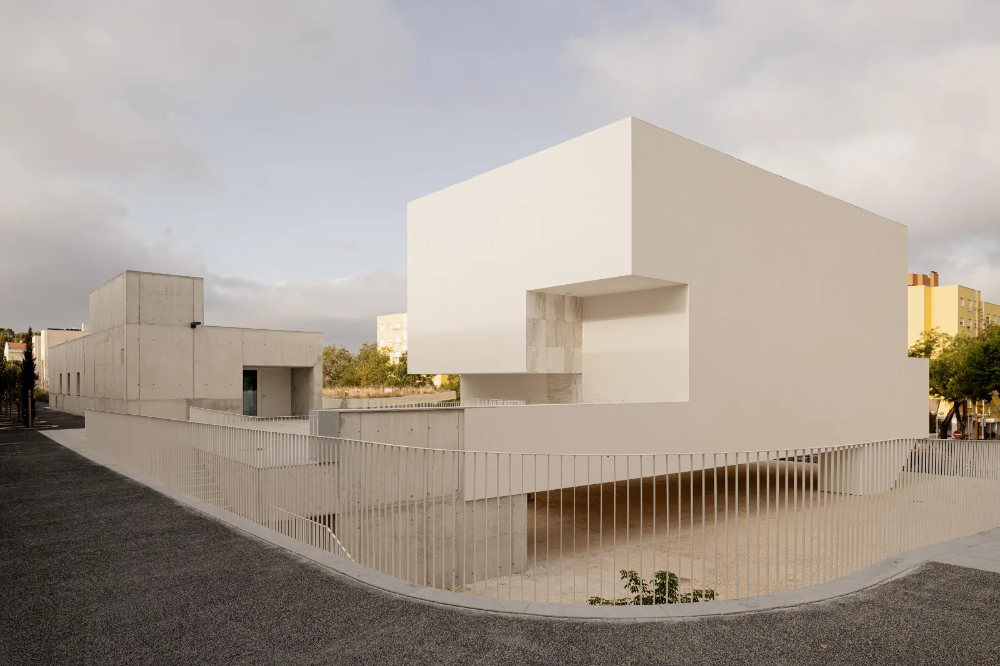
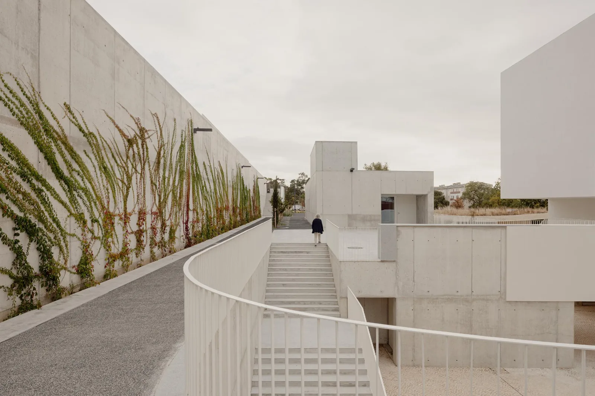
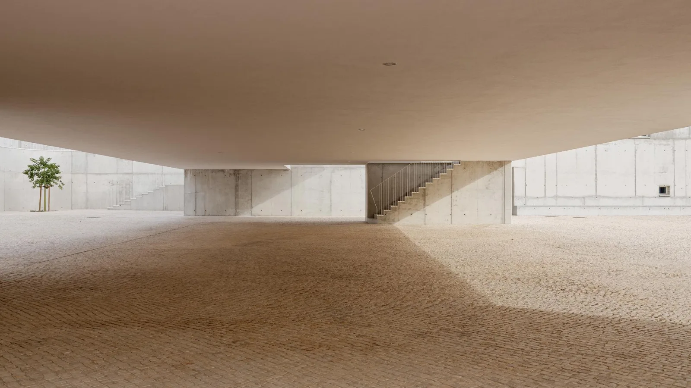
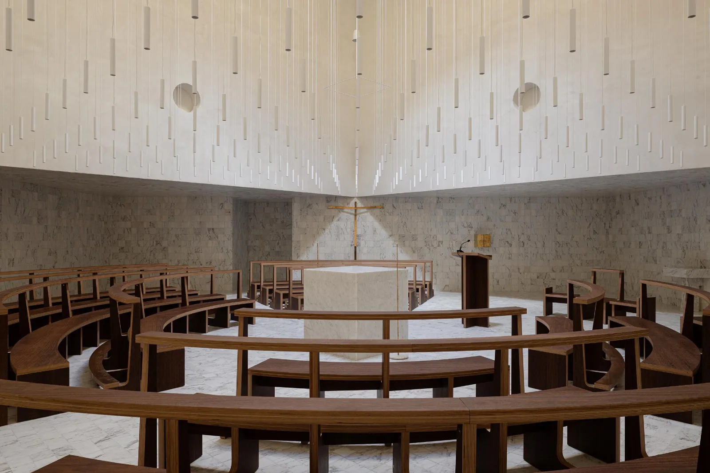
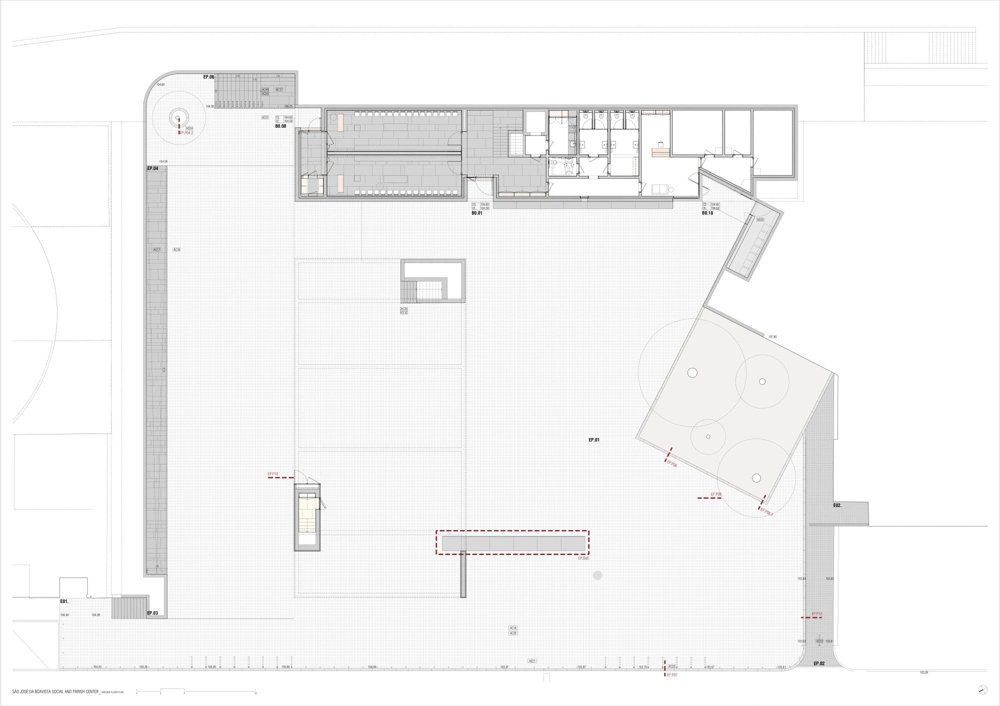
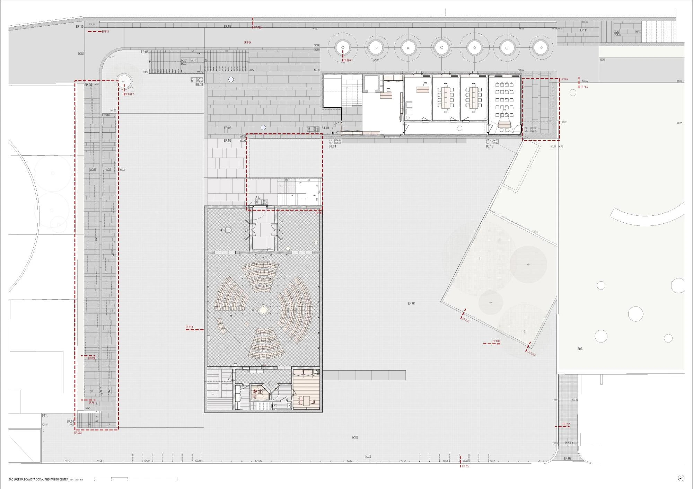
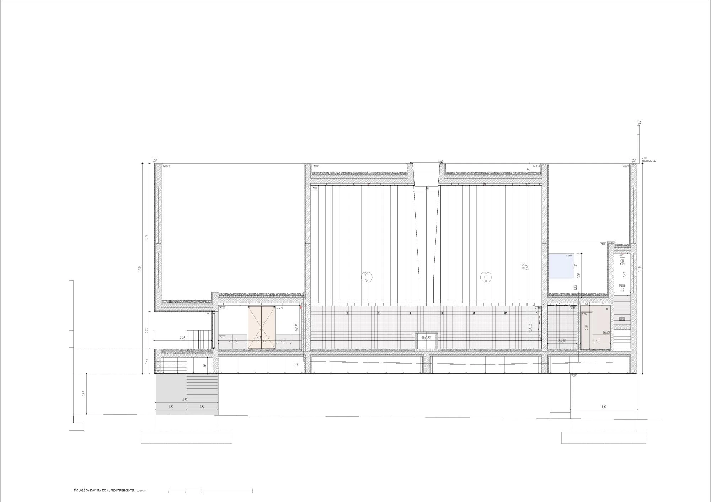
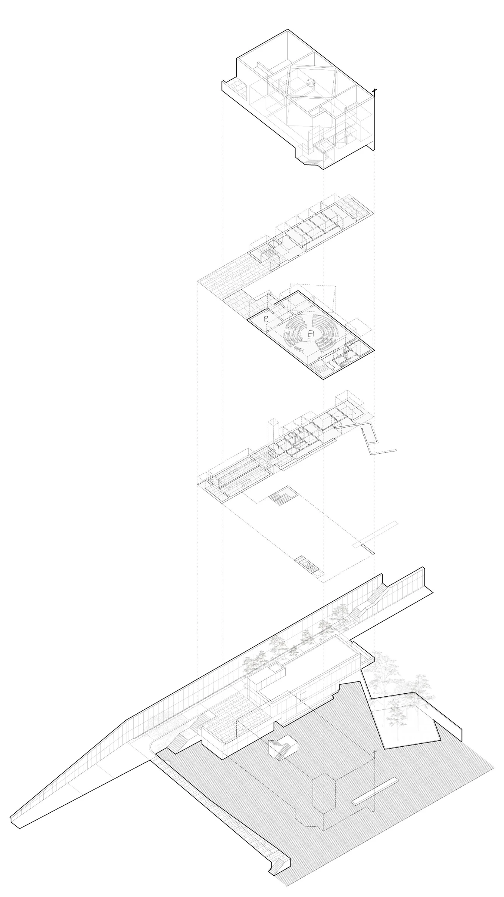

Church and parish centre · 2025
São José da Boavista Church and Parish Centre
Matos Gameiro Arquitectos / Pedro Matos Gameiro and Atelier Bugio / João Favila Menezes
Lisbon, Portugal
The church supports collective worship and quieter individual reflection. Parish rooms and the covered square extend its role into neighbourhood life, offering places for people to meet and stay.
Lifting the church creates a sheltered square below it. A continuous wall-building negotiates the sloping site through stairs and ramps, while the worship interior combines a directional nave with an assembly gathered around the altar and a more secluded side space.


Relevant connections
THINK
The worship interior and more secluded side space support prayer and reflection.
SHOW
Collective worship and the covered public square support communal gathering.
Images and drawings / 08













